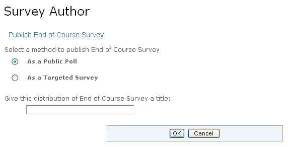

Once a survey has been authored, it needs to be distributed before other users can view it and answer the questions. To distribute a survey, go to the Survey Author channel and click the Publish button associated to the desired Survey.
There are two different types of surveys. Choose either a Public Poll or a Survey by selecting the audience for distribution.
Public Polls appear to all users in the Poll Channel. There is no limit to the number of times a user can submit a public poll. Likewise, all users will be able to view the results of any poll in the Poll Channel. To distribute a survey in this way, follow these steps:
- Select the method for distribution As a Public Poll by selecting the Radio Button.
- Give this specific distribution a name in the distribution title field.
- Click the OK button.
The Poll will now appear to all users in the Poll Channel.

Surveys appear in the Survey Channel. To distribute a survey in this way, follow these steps:
- Select the method for distribution As a Targeted Survey by selecting the Radio Button.
- To send a notification or email announcement about this survey to your audience, check the Notification and/or Email boxes.
- Now choose among three types of responses to be displayed in the results screen (Anonymous, Named, or Election).
- Anonymous response type surveys can be submitted multiple times per user. All responses will be counted towards the total, even if one user submits multiple responses. The results screen will not show the specific answers from each user.
- Named response type surveys can be submitted multiple times per user. However, only the most-recent responses will be saved. The results screen will show each user's specific answers.
- Election response type surveys can only be submitted one time per user. Once a user submits a survey of this type, it will disappear from their Survey Channel.

Next select the Recipients who will be eligible to complete the survey.
- Click the Add Recipients button.
- To choose group(s) of users to receive the survey, place a checkmark next to each desired group from the hierarchy displayed on the browse tab. Clicking the + icon next to a group name will expand the list group.
- To select individual users, click the Search tab. Enter search criteria Name, Title, Department, or Email. Check the boxes next to the users who should receive the survey.
Once all users and/or groups have been identified, click the Submit Selections button.

4. Give this specific distribution a name in the distribution title field.
You are now ready to distribute the survey. Click OK to publish the survey to the selected recipients.